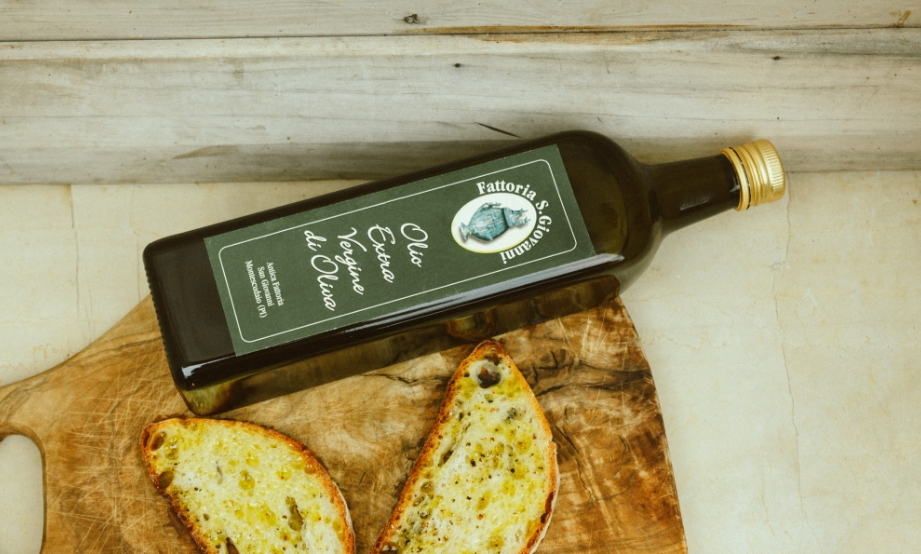
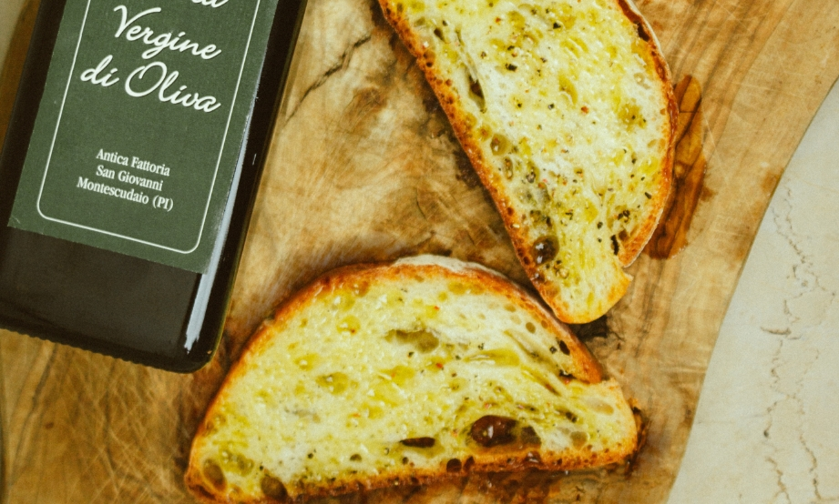

Produciamo anche l’Olio Extra Vergine di Oliva biologico, ottenuto dagli stessi olivi impiantati dai contadini che ci hanno preceduto, garantendo una tradizione autentica.
* Per l’ulteriori informazioni su prenotazioni ed acquisti contattare per email o telefono
Olio Extra Vergine di Oliva Biologico
Il nostro olio nasce da olive autoctone coltivate con cura e rispetto per l’ambiente. Gli oliveti della nostra azienda ospitano gli stessi olivi impiantati dai contadini che ci hanno preceduto, garantendo una tradizione autentica.
Il terreno, un tempo abitato dal mare, è ricco di minerali, contribuendo alla qualità delle nostre olive.
Inoltre, la raccolta manuale e la spremitura a freddo preservano la qualità, offrendo un olio dal colore verde intenso, fruttato e genuino, con un pizzicore tipico dell’olio extra vergine.

